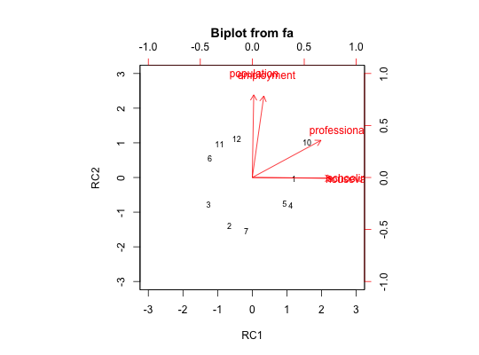

Does an eigen value decomposition and returns eigen values, loadings, and degree of fit for a specified number of components. Basically it is just doing a principal components analysis (PCA) for n principal components of either a correlation or covariance matrix. Can show the residual correlations as well. The quality of reduction in the squared correlations is reported by comparing residual correlations to original correlations. Unlike princomp, this returns a subset of just the best nfactors. The eigen vectors are rescaled by the sqrt of the eigen values to produce the component loadings more typical in factor analysis.
principal(r, nfactors = 1, residuals = FALSE,rotate="varimax",n.obs=NA, covar=FALSE, scores=TRUE,missing=FALSE,impute="median",oblique.scores=TRUE,method="regression",...)
| r | a correlation matrix. If a raw data matrix is used, the correlations will be found using pairwise deletions for missing values. |
|---|---|
| nfactors | Number of components to extract |
| residuals | FALSE, do not show residuals, TRUE, report residuals |
| rotate | "none", "varimax", "quatimax", "promax", "oblimin", "simplimax", and "cluster" are possible rotations/transformations of the solution. See |
| n.obs | Number of observations used to find the correlation matrix if using a correlation matrix. Used for finding the goodness of fit statistics. |
| covar | If false, find the correlation matrix from the raw data or convert to a correlation matrix if given a square matrix as input. |
| scores | If TRUE, find component scores |
| missing | if scores are TRUE, and missing=TRUE, then impute missing values using either the median or the mean |
| impute | "median" or "mean" values are used to replace missing values |
| oblique.scores | If TRUE (default), then the component scores are based upon the structure matrix. If FALSE, upon the pattern matrix. |
| method | Which way of finding component scores should be used. The default is "regression" |
| ... | other parameters to pass to functions such as factor.scores or the various rotation functions. |
Useful for those cases where the correlation matrix is improper (perhaps because of SAPA techniques).
There are a number of data reduction techniques including principal components analysis (PCA) and factor analysis (EFA). Both PC and FA attempt to approximate a given correlation or covariance matrix of rank n with matrix of lower rank (p). \(_nR_n \approx _{n}F_{kk}F_n'+ U^2\) where k is much less than n. For principal components, the item uniqueness is assumed to be zero and all elements of the correlation or covariance matrix are fitted. That is, \(_nR_n \approx _{n}F_{kk}F_n'\) The primary empirical difference between a components versus a factor model is the treatment of the variances for each item. Philosophically, components are weighted composites of observed variables while in the factor model, variables are weighted composites of the factors.
For a n x n correlation matrix, the n principal components completely reproduce the correlation matrix. However, if just the first k principal components are extracted, this is the best k dimensional approximation of the matrix.
It is important to recognize that rotated principal components are not principal components (the axes associated with the eigen value decomposition) but are merely components. To point this out, unrotated principal components are labelled as PCi, while rotated PCs are now labeled as RCi (for rotated components) and obliquely transformed components as TCi (for transformed components). (Thanks to Ulrike Gromping for this suggestion.)
Rotations and transformations are either part of psych (Promax and cluster), of base R (varimax), or of GPArotation (simplimax, quartimax, oblimin, etc.).
Of the various rotation/transformation options, varimax, Varimax, quartimax, bentlerT, geominT, and bifactor do orthogonal rotations. Promax transforms obliquely with a target matix equal to the varimax solution. oblimin, quartimin, simplimax, bentlerQ, geominQ and biquartimin are oblique transformations. Most of these are just calls to the GPArotation package. The ``cluster'' option does a targeted rotation to a structure defined by the cluster representation of a varimax solution. With the optional "keys" parameter, the "target" option will rotate to a target supplied as a keys matrix. (See target.rot.)
The rotation matrix (rot.mat) is returned from all of these options. This is the inverse of the Th (theta?) object returned by the GPArotation package. The correlations of the factors may be found by \(\Phi = \theta' \theta\)
Some of the statistics reported are more appropriate for (maximum likelihood) factor analysis rather than principal components analysis, and are reported to allow comparisons with these other models.
Although for items, it is typical to find component scores by scoring the salient items (using, e.g., scoreItems) component scores are found by regression where the regression weights are \(R^{-1} \lambda\) where \(\lambda\) is the matrix of component loadings. The regression approach is done to be parallel with the factor analysis function fa. The regression weights are found from the inverse of the correlation matrix times the component loadings. This has the result that the component scores are standard scores (mean=0, sd = 1) of the standardized input. A comparison to the scores from princomp shows this difference. princomp does not, by default, standardize the data matrix, nor are the components themselves standardized. The regression weights are found from the Structure matrix, not the Pattern matrix. If the scores are found with the covar option = TRUE, then the scores are not standardized but are just mean centered.
Jolliffe (2002) discusses why the interpretation of rotated components is complicated. Rencher (1992) discourages the use of rotated components. The approach used here is consistent with the factor analytic tradition. The correlations of the items with the component scores closely matches (as it should) the component loadings (as reported in the structure matrix).
The output from the print.psych function displays the component loadings (from the pattern matrix), the h2 (communalities) the u2 (the uniquenesses), com (the complexity of the component loadings for that variable (see below). In the case of an orthogonal solution, h2 is merely the row sum of the squared component loadings. But for an oblique solution, it is the row sum of the (squared) orthogonal component loadings (remember, that rotations or transformations do not change the communality). This information is returned (invisibly) from the print function as the object Vaccounted.
Eigen Values of all components -- useful for a scree plot
which rotation was requested?
number of observations specified or found
Communality estimates for each item. These are merely the sum of squared factor loadings for that item.
Hoffman's index of complexity for each item. This is just \(\frac{(\Sigma a_i^2)^2}{\Sigma a_i^4}\) where a_i is the factor loading on the ith factor. From Hofmann (1978), MBR. See also Pettersson and Turkheimer (2010).
A standard loading matrix of class ``loadings"
Fit of the model to the correlation matrix
how well are the off diagonal elements reproduced?
Residual matrix -- if requested
Degrees of Freedom for this model. This is the number of observed correlations minus the number of independent parameters (number of items * number of factors - nf*(nf-1)/2. That is, dof = niI * (ni-1)/2 - ni * nf + nf*(nf-1)/2.
value of the function that is minimized by maximum likelihood procedures. This is reported for comparison purposes and as a way to estimate chi square goodness of fit. The objective function is \(f = log(trace ((FF'+U2)^{-1} R) - log(|(FF'+U2)^{-1} R|) - n.items\). Because components do not minimize the off diagonal, this fit will be not as good as for factor analysis.
If the number of observations is specified or found, this is a chi square based upon the objective function, f. Using the formula from factanal:
\(\chi^2 = (n.obs - 1 - (2 * p + 5)/6 - (2 * factors)/3)) * f \)
If n.obs > 0, then what is the probability of observing a chisquare this large or larger?
If oblique rotations (using oblimin from the GPArotation package) are requested, what is the interfactor correlation.
If scores=TRUE, then estimates of the factor scores are reported
The beta weights to find the principal components from the data
The multiple R square between the factors and factor score estimates, if they were to be found. (From Grice, 2001) For components, these are of course 1.0.
The correlations of the component score estimates with the components, if they were to be found and unit weights were used. (So called course coding).
The rotation matrix used to produce the rotated component loadings.
By default, the accuracy of the varimax rotation function seems to be less than the Varimax function. This can be enhanced by specifying eps=1e-14 in the call to principal if using varimax rotation. Furthermore, note that Varimax by default does not apply the Kaiser normalization, but varimax does. Gottfried Helms compared these two rotations with those produced by SPSS and found identical values if using the appropriate options. (See the last two examples.)
Grice, James W. (2001), Computing and evaluating factor scores. Psychological Methods, 6, 430-450
Jolliffe, I. (2002) Principal Component Analysis (2nd ed). Springer.
Rencher, A. C. (1992) Interpretation of Canonical Discriminant Functions, Canonical Variates, and Principal Components, the American Statistician, (46) 217-225.
Revelle, W. An introduction to psychometric theory with applications in R (in prep) Springer. Draft chapters available at http://personality-project.org/r/book/
VSS (to test for the number of components or factors to extract), VSS.scree and fa.parallel to show a scree plot and compare it with random resamplings of the data), factor2cluster (for course coding keys), fa (for factor analysis), factor.congruence (to compare solutions), predict.psych to find factor/component scores for a new data set based upon the weights from an original data set.
#Four principal components of the Harman 24 variable problem #compare to a four factor principal axes solution using factor.congruence pc <- principal(Harman74.cor$cov,4,rotate="varimax") mr <- fa(Harman74.cor$cov,4,rotate="varimax") #minres factor analysis pa <- fa(Harman74.cor$cov,4,rotate="varimax",fm="pa") # principal axis factor analysis round(factor.congruence(list(pc,mr,pa)),2)#> RC1 RC3 RC2 RC4 MR1 MR3 MR2 MR4 PA1 PA3 PA2 PA4 #> RC1 1.00 0.53 0.43 0.46 1.00 0.61 0.46 0.54 1.00 0.61 0.46 0.54 #> RC3 0.53 1.00 0.43 0.47 0.54 0.99 0.44 0.54 0.54 0.99 0.44 0.54 #> RC2 0.43 0.43 1.00 0.47 0.44 0.50 1.00 0.55 0.44 0.50 1.00 0.55 #> RC4 0.46 0.47 0.47 1.00 0.47 0.53 0.49 0.99 0.47 0.53 0.49 0.99 #> MR1 1.00 0.54 0.44 0.47 1.00 0.61 0.46 0.55 1.00 0.61 0.46 0.55 #> MR3 0.61 0.99 0.50 0.53 0.61 1.00 0.50 0.61 0.61 1.00 0.50 0.61 #> MR2 0.46 0.44 1.00 0.49 0.46 0.50 1.00 0.57 0.46 0.50 1.00 0.57 #> MR4 0.54 0.54 0.55 0.99 0.55 0.61 0.57 1.00 0.55 0.61 0.57 1.00 #> PA1 1.00 0.54 0.44 0.47 1.00 0.61 0.46 0.55 1.00 0.61 0.46 0.55 #> PA3 0.61 0.99 0.50 0.53 0.61 1.00 0.50 0.61 0.61 1.00 0.50 0.61 #> PA2 0.46 0.44 1.00 0.49 0.46 0.50 1.00 0.57 0.46 0.50 1.00 0.57 #> PA4 0.54 0.54 0.55 0.99 0.55 0.61 0.57 1.00 0.55 0.61 0.57 1.00pc2 <- principal(Harman.5,2,rotate="varimax") pc2#> Principal Components Analysis #> Call: principal(r = Harman.5, nfactors = 2, rotate = "varimax") #> Standardized loadings (pattern matrix) based upon correlation matrix #> RC1 RC2 h2 u2 com #> population 0.02 0.99 0.99 0.012 1.0 #> schooling 0.94 -0.01 0.89 0.115 1.0 #> employment 0.14 0.98 0.98 0.021 1.0 #> professional 0.83 0.45 0.88 0.120 1.5 #> housevalue 0.97 -0.01 0.94 0.062 1.0 #> #> RC1 RC2 #> SS loadings 2.52 2.15 #> Proportion Var 0.50 0.43 #> Cumulative Var 0.50 0.93 #> Proportion Explained 0.54 0.46 #> Cumulative Proportion 0.54 1.00 #> #> Mean item complexity = 1.1 #> Test of the hypothesis that 2 components are sufficient. #> #> The root mean square of the residuals (RMSR) is 0.03 #> with the empirical chi square 0.29 with prob < 0.59 #> #> Fit based upon off diagonal values = 1round(cor(Harman.5,pc2$scores),2) #compare these correlations to the loadings#> RC1 RC2 #> population 0.02 0.99 #> schooling 0.94 -0.01 #> employment 0.14 0.98 #> professional 0.83 0.45 #> housevalue 0.97 -0.01#now do it for unstandardized scores, and transform obliquely pc2o <- principal(Harman.5,2,rotate="promax",covar=TRUE) pc2o#> Principal Components Analysis #> Call: principal(r = Harman.5, nfactors = 2, rotate = "promax", covar = TRUE) #> Unstandardized loadings (pattern matrix) based upon covariance matrix #> RC1 RC2 h2 u2 H2 U2 #> population -40.1 3440.30 1.2e+07 6.7e+03 1.00 5.7e-04 #> schooling 1.5 -0.01 2.4e+00 8.1e-01 0.75 2.5e-01 #> employment 110.3 1210.10 1.5e+06 5.4e+04 0.96 3.5e-02 #> professional 87.7 48.30 1.0e+04 2.9e+03 0.78 2.2e-01 #> housevalue 6368.4 -23.16 4.1e+07 2.2e+01 1.00 5.4e-07 #> #> RC1 RC2 #> SS loadings 40571924.73 13297286.79 #> Proportion Var 0.75 0.25 #> Cumulative Var 0.75 1.00 #> Proportion Explained 0.75 0.25 #> Cumulative Proportion 0.75 1.00 #> #> Standardized loadings (pattern matrix) #> item RC1 RC2 h2 u2 #> population 1 -0.01 1.00 1.00 5.7e-04 #> schooling 2 0.86 -0.01 0.75 2.5e-01 #> employment 3 0.09 0.97 0.96 3.5e-02 #> professional 4 0.76 0.42 0.78 2.2e-01 #> housevalue 5 1.00 0.00 1.00 5.4e-07 #> #> RC1 RC2 #> SS loadings 3.76 1.23 #> Proportion Var 0.75 0.25 #> Cumulative Var 0.75 1.00 #> Cum. factor Var 0.75 1.00 #> #> With component correlations of #> RC1 RC2 #> RC1 1.00 0.04 #> RC2 0.04 1.00 #> #> Mean item complexity = 1.1 #> Test of the hypothesis that 2 components are sufficient. #> #> The root mean square of the residuals (RMSR) is 6040.31 #> with the empirical chi square 8756488842 with prob < 0 #> #> Fit based upon off diagonal values = 1round(cov(Harman.5,pc2o$scores),2)#> RC1 RC2 #> population 89.53 3438.79 #> schooling 1.54 0.05 #> employment 155.90 1214.25 #> professional 89.56 51.60 #> housevalue 6367.49 216.72pc2o$Structure #this matches the covariances with the scores#> RC1 RC2 #> population 89.532324 3.438787e+03 #> schooling 1.542246 4.714838e-02 #> employment 155.900367 1.214255e+03 #> professional 89.559504 5.160112e+01 #> housevalue 6367.487506 2.167238e+02biplot(pc2,main="Biplot of the Harman.5 socio-economic variables",labels=paste0(1:12))#For comparison with SPSS (contributed by Gottfried Helms) pc2v <- principal(iris[1:4],2,rotate="varimax",normalize=FALSE,eps=1e-14) print(pc2v,digits=7)#> Principal Components Analysis #> Call: principal(r = iris[1:4], nfactors = 2, rotate = "varimax", normalize = FALSE, #> eps = 1e-14) #> Standardized loadings (pattern matrix) based upon correlation matrix #> RC1 RC2 h2 u2 com #> Sepal.Length 0.9593182 0.0480331 0.9225986 0.077401362 1.005014 #> Sepal.Width -0.1442732 0.9849389 0.9909193 0.009080678 1.042893 #> Petal.Length 0.9441083 -0.3039564 0.9837300 0.016270047 1.205101 #> Petal.Width 0.9323563 -0.2568894 0.9352804 0.064719625 1.150960 #> #> RC1 RC2 #> SS loadings 2.7017349 1.1307934 #> Proportion Var 0.6754337 0.2826983 #> Cumulative Var 0.6754337 0.9581321 #> Proportion Explained 0.7049485 0.2950515 #> Cumulative Proportion 0.7049485 1.0000000 #> #> Mean item complexity = 1.1 #> Test of the hypothesis that 2 components are sufficient. #> #> The root mean square of the residuals (RMSR) is 0.030876 #> with the empirical chi square 1.715987 with prob < NA #> #> Fit based upon off diagonal values = 0.9978717pc2V <- principal(iris[1:4],2,rotate="Varimax",eps=1e-7) p <- print(pc2V,digits=7)#> Principal Components Analysis #> Call: principal(r = iris[1:4], nfactors = 2, rotate = "Varimax", eps = 1e-07) #> Standardized loadings (pattern matrix) based upon correlation matrix #> RC1 RC2 h2 u2 com #> Sepal.Length 0.9593182 0.0480331 0.9225986 0.077401362 1.005014 #> Sepal.Width -0.1442732 0.9849389 0.9909193 0.009080678 1.042893 #> Petal.Length 0.9441083 -0.3039563 0.9837300 0.016270047 1.205101 #> Petal.Width 0.9323563 -0.2568893 0.9352804 0.064719625 1.150960 #> #> RC1 RC2 #> SS loadings 2.7017350 1.1307933 #> Proportion Var 0.6754338 0.2826983 #> Cumulative Var 0.6754338 0.9581321 #> Proportion Explained 0.7049485 0.2950515 #> Cumulative Proportion 0.7049485 1.0000000 #> #> Mean item complexity = 1.1 #> Test of the hypothesis that 2 components are sufficient. #> #> The root mean square of the residuals (RMSR) is 0.030876 #> with the empirical chi square 1.715987 with prob < NA #> #> Fit based upon off diagonal values = 0.9978717round(p$Vaccounted,2) # the amount of variance accounted for is returned as an object of print#> RC1 RC2 #> SS loadings 2.70 1.13 #> Proportion Var 0.68 0.28 #> Cumulative Var 0.68 0.96 #> Proportion Explained 0.70 0.30 #> Cumulative Proportion 0.70 1.00